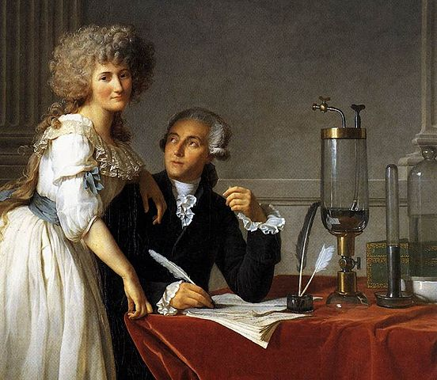
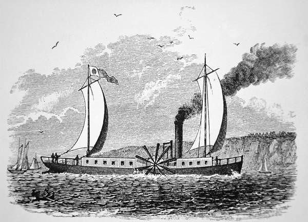
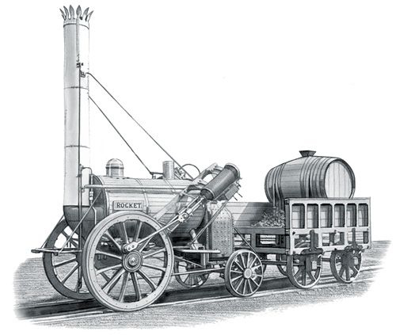
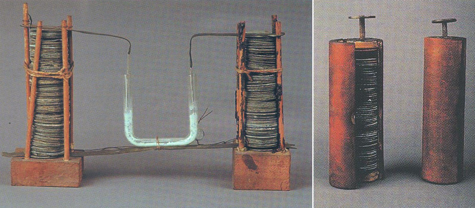

Uno dei settori che si sviluppò grazie agli scienziati è quello della chimica. La rivoluzione chimica interessò inizialmente il settore tessile, infatti c’era una richiesta di candeggianti, coloranti e sgrassanti, di conseguenza si ricorse a composti chimici, i quali si ottenevano in laboratorio. Uno dei più grandi chimici dell’epoca fu Antoine-Laurent Lavoisier, considerato il padre della chimica moderna. A lui si devono le quattro scoperte basilari della chimica: che l’aria non è un elemento semplice ma un miscuglio di gas; che l’acqua è costituita da due elementi; che una sostanza è un elemento se non può essere ulteriormente scomposta; che durante una reazione chimica la quantità di materia coinvolta nella reazione non cambia.
Il progresso industriale fu accompagnato dallo sviluppo dei trasporti. Fino a quel momento era stato possibile navigare solo in presenza del vento con il motore a vapore esso non era più essenziale. Il primo battello a vapore fu costruito in Francia nel 1783. Nel 1818 la nave americana Savannah attraversò in diciannove giorni l’Oceano atlantico. Le navi a vapore, tuttavia, dovettero ancora essere dotate di vele in quanto il quantitativo di carbone necessario per l’intero viaggio non poteva essere caricato sulla nave.
Si svilupparono anche le locomotive a vapore. Inizialmente esse erano talmente pesanti che rompevano le rotaie, successivamente Stephenson riuscì a renderle più leggere e grazie a lui nel 1825 entrò in funzione in Inghilterra la prima linea ferroviaria del mondo. Quattro anni più tardi Stephenson costruì una locomotiva capace di raggiungere i 36 km/h e lo chiamò The rocket.
Già si annunciava una nuova forma di energia, l'elettricità. Nel Settecento l’elettricità veniva usata per giochi da salotto, raramente si giungeva risultati pratici. Un’eccezione furono i parafulmini, inventati da Benjamin Franklin grazie agli esperimenti sull’elettricità atmosferica. Fu uno scienziato italiano, Alessandro Volta, a inventare nel 1799 il primo apparecchio capace di produrre una corrente elettrica continua, la pila.
